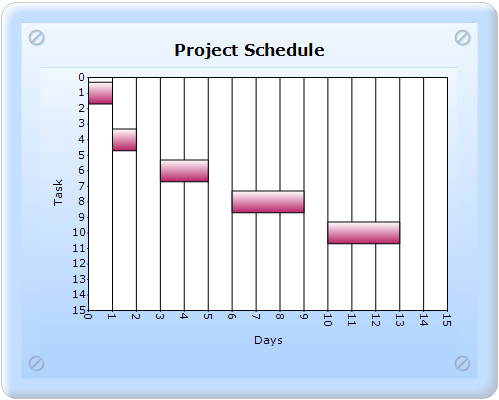
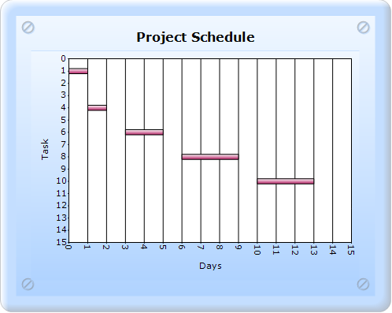
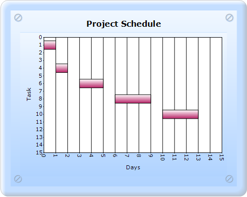

PointWidth is used to set the width of the point relative to the available total width. It is very useful to render series that overlap.
|
Details | |
|
Possible values |
0.0F to 1.0F |
|
Default value |
1.0F |
|
2D/3D limitations |
No |
|
Application to chart element |
Any series |
|
Application to chart types |
Gantt chart |

Figure 199: Default PointWidth

Figure 200: PointWidth set as 0.3f
PhongAlpha specifies the Phong's alpha co-efficient used for calculating specular lighting.
|
Details | |
|
Possible values |
Any double value. |
|
Default value |
20 |
|
2D/3D limitations |
No |
|
Application to chart element |
Any series |
|
Application to chart types |
Column chart, Bar chart, Box and Whisker chart, Gantt chart, Histogram chart, Tornado chart, Polar chart, Radar chart, HiLo chart, HiLoOpenClose chart, Candle chart, and Scatter chart. |
GanttDrawMode specifies the drawing mode of the Gantt chart.
|
Details | |
|
Possible values |
AutoSizeMode - Plots the Gantt chart side-by-side. CustomPointWidthMode - Plots the Gantt chart as overlapped. |
|
Default value |
CustomPointWidthMode |
|
2D/3D limitations |
None |
|
Application to chart element |
All series |
|
Application to chart types |
Gantt chart |
Figure 201: Gantt chart with DrawMode as AutoSizeMode
Gantt chart with PhongAlpha, PointWidth, and GanttDrawMode can be created through two ways:
· Builder
· ChartModel
To create a Gantt chart with PhongAlpha, PointWidth, and GanttDrawMode through Builder:
1. In Controller, return view to the corresponding View page.
|
[C#] public ActionResult SimpleChart() { return View(); }
|
2. In the View page, invoke the ChartBuilder by using the control ID as the first argument.
3. Add the Series to the ChartModel and set the series type to Gantt, and add the Points to the series and set the style.
4. Set the ChartModel and ChartArea properties.
5. Set PointWidth in Series Style, set GanttConfigItem as CustomPointWidthMode, and set ColumnConfigItem.
|
View [ASPX] <%= Html.Chart("SimpleChart").Series(series =>{ series.Add().Type(Syncfusion.Windows.Forms.Chart.ChartSeriesType.Gantt) .Text("Completion") .Style(style=>{ style.PointWidth(0.8f); }) .Points(points => { points.Add(1, 0, 1); points.Add(4, 1, 2); points.Add(6, 3, 5); points.Add(8, 6, 9); points.Add(10, 10, 13); points.Add(12, 15, 18); }) .ConfigItems(configitems => { configitems.GanttItem(item => { item.DrawMode(Syncfusion.Windows.Forms.Chart.ChartGanttDrawMode.CustomPointWidthMode); }); configitems.ColumnItem(item=>{ item.PhongAlpha(20); }); }); }) //------------- Set ChartModel and Chart Properties that you want----------
%>
|
|
View [cshtml] @{ Html.Chart("SimpleChart").Series(series =>{ series.Add().Type(Syncfusion.Windows.Forms.Chart.ChartSeriesType.Gantt) .Text("Completion") .Style(style=>{ style.PointWidth(0.8f); }) .Points(points => { points.Add(1, 0, 1); points.Add(4, 1, 2); points.Add(6, 3, 5); points.Add(8, 6, 9); points.Add(10, 10, 13); points.Add(12, 15, 18); }) .ConfigItems(configitems => { configitems.GanttItem(item => { item.DrawMode(Syncfusion.Windows.Forms.Chart.ChartGanttDrawMode.CustomPointWidthMode); }); configitems.ColumnItem(item=>{ item.PhongAlpha(20); }); }); }).Render(); //------------- Set ChartModel and Chart Properties what you want----------
} |
6. Build and run the application, to get the following output:

Figure 202: Gantt chart with DrawMode as CustomPointWidthMode,
PointWidth as 0.8f, and PhongAlpha as 20
To create a Gantt chart with PhongAlpha, PointWidth, and GanttDrawMode through:
1. In Controller, create an instance of MVCChartModel.
2. Create an instance of ChartSeries, and set the SeriesType to Gantt.
3. Set the ChartSeries, ChartArea, and ChartModel properties.
4. Return view to the corresponding View page after setting the ChartModel to the ViewData.
5. Set PointWidth in Series Style, set GanttConfigItem as CustomPointWidthMode, and set ColumnConfigItem.
|
[C#]
public ActionResult SimpleChart() { MVCChartModel chartModel = new MVCChartModel();
// Create chart series and add data points to it. ChartSeries Completion = new ChartSeries("Completion", ChartSeriesType.Gantt);
Completion.Points.Add(1, 0, 1); Completion.Points.Add(4, 1, 2); Completion.Points.Add(6, 3, 5); Completion.Points.Add(8, 6, 9); Completion.Points.Add(10, 10, 13); Completion.Points.Add(12, 15, 18); Completion.Style.PointWidth = 0.8f; Completion.ConfigItems.GanttItem.DrawMode = ChartGanttDrawMode.CustomPointWidthMode; Completion.ConfigItems.ColumnItem.PhongAlpha = 20;
// Add the series to the chart series collection. chartModel.Series.Add(Completion);
//------------- Set the ChartModel and Chart Properties that you want---------- ViewData.Model = chartModel;
return View(); }
|
6. In the View page, invoke the ChartBuilder by using the control ID as the first argument, and convert the ViewData to MVCChartModel and set it as the second argument.
|
View [ASPX]
<%= Html.Chart("SimpleChart",(MVCChartModel)ViewData.Model) %>
|
|
View [cshtml] @(new HtmlString(Html.Chart("SimpleChart",(MVCChartModel)ViewData.Model).ToString()))
|
7. Build and run the application, to get the following output:
Figure 203: Gantt chart with DrawMode as CustomPointWidthMode,
PointWidth as 0.8f, and PhongAlpha as 20
See Also
Column Chart, Bar Chart, Box and Whisker Chart, Gantt Chart, Histogram Chart, Tornado Chart, Polar and Radar Chart, HiLo Chart, HiLoOpenClose Chart, Candle Chart, Scatter Chart